仿真系统与真机切换实践¶
1.1 真机系统框架介绍¶
用户在拿到小车以后，请对照发货清单检查是否齐全，以及硬件是否有破损，如不齐全以及破损，请及时联系客服进行解决。
车体¶
硬件系统主要包含小车车身，电机，车轮，保险杠，电池等硬件，具有以下优点：
①前后均配备有保险杠，有一定的防碰撞能力，能较好地保护车身及其他硬件，减少小车碰撞时的损坏。
②车身大部分硬件采用金属材质，结实耐用。
③车轮采用四轮驱动，动力更加充足，并且后轮采用麦克纳姆轮，转弯更加灵活，并且可以原地旋转。
④小车拥有悬挂系统，能保证小车更加平稳地运行，保证各种传感器数据更加精确，稳定。
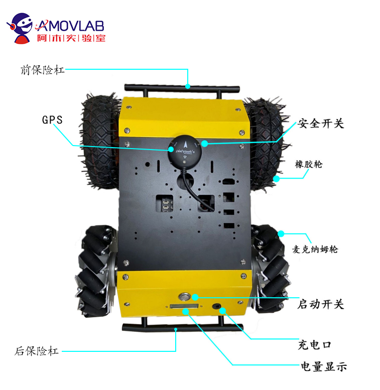飞控板¶
飞控板主要负责控制小车的四个电机，并且搭载有IMU,RTK,GPS等传感器，可以与板载计算机和地面站进行通讯，接收下发的命令，上发一些小车状态数据，传感器数据等，飞控板还负责一些简单的功能应用的逻辑处理。
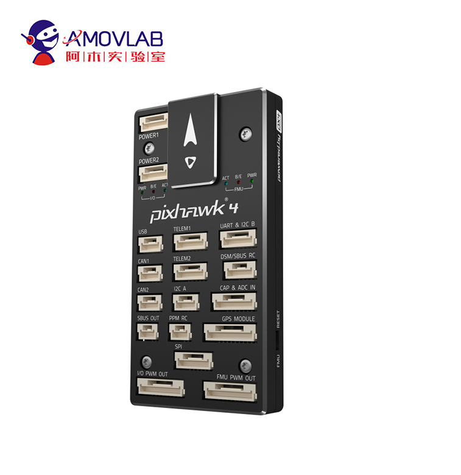板载计算机¶
搭载有ROS系统，主要负责小车上层应用以及算法的逻辑处理，规划等，例如slam，定位，避障，路径规划，视觉等功能。
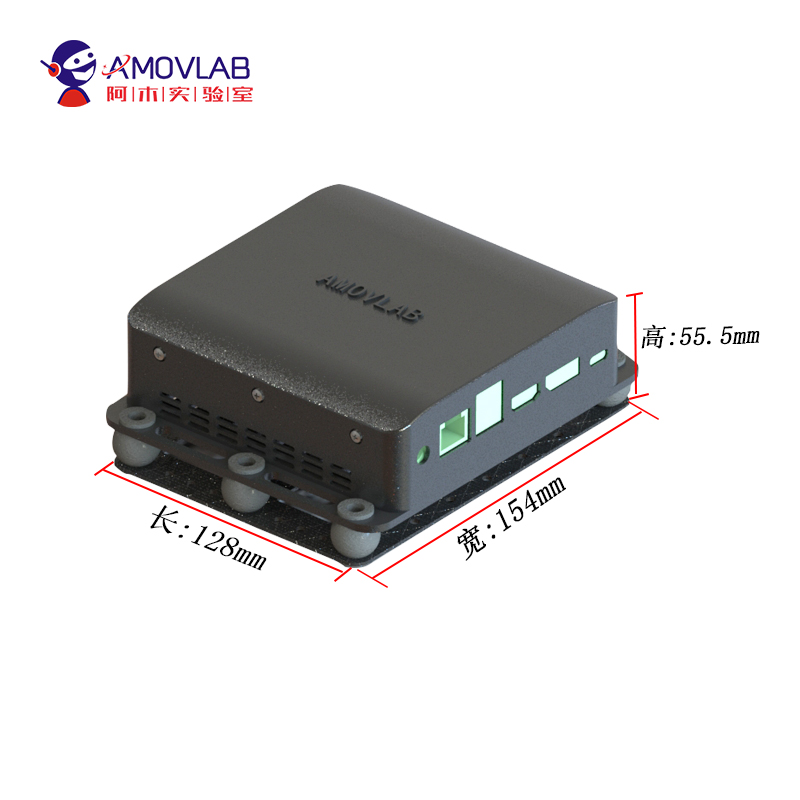WiFi数传¶
WiFi数传的作用相当于是一个路由器。飞控，地面站，以及板载计算机连接到WiFi数传以后，相当于是进入同一个局域网，通过局域网进行互相通信
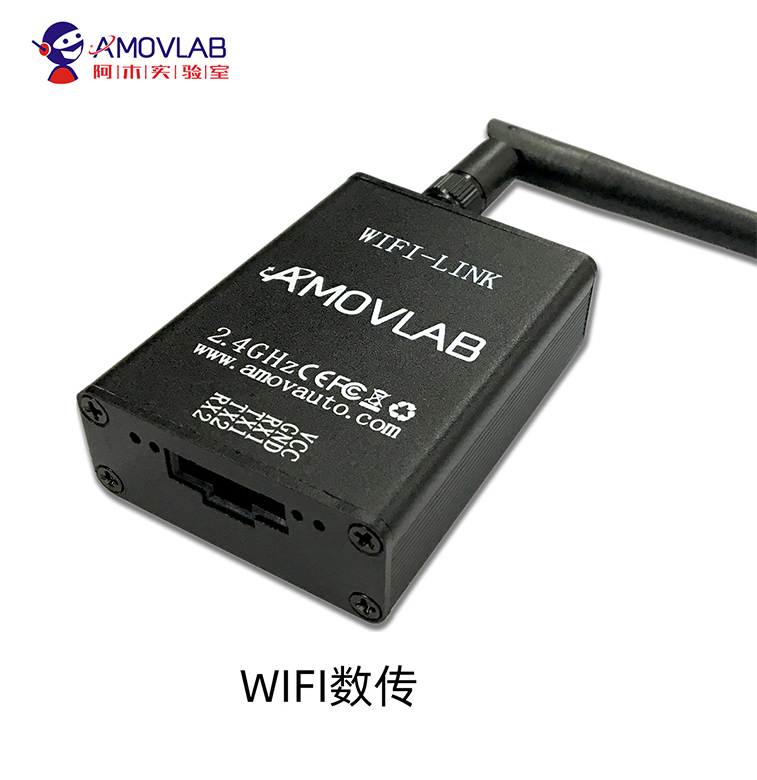T265相机¶
英特尔® 实感™ 追踪摄像头 T265 外形小巧，功耗低，它提供现成可用的追踪性能。具有跨平台、开发人员友好的同步定位与建图功能，可满足机器人、无人机和增强现实快速原型制作需求。
详情参数请参考链接：https://www.intelrealsense.com/zh-hans/tracking-camera-t265/
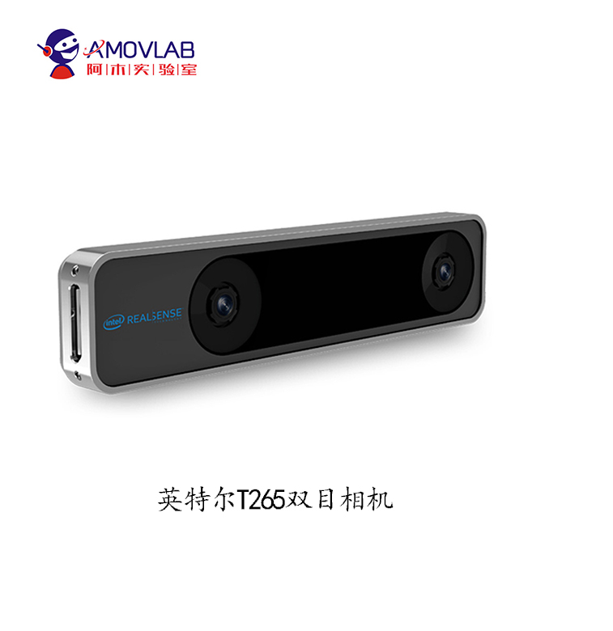D435I相机¶
英特尔® 实感™ D435i 在立体深度摄像头中放置了一个 IMU。D435i 采用英特尔模块和视觉处理器，是一款能够了解自身运动的深度摄像头。
详情参数请参考链接：https://www.intelrealsense.com/zh-hans/depth-camera-d435i/
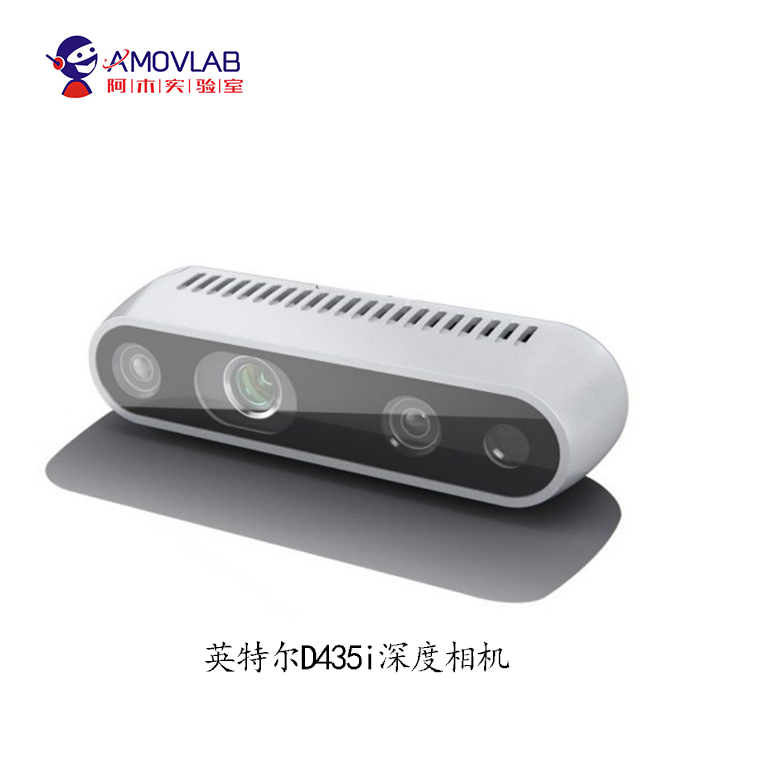激光雷达¶
激光雷达是一种机械设施，是以发射激光束探测目标的位置、速度等特征量的雷达系统。能够完成避障，定位与建图等功能。
详情参数请参考链接：https://www.slamtec.com/cn/Lidar/A2

1.2 ROS软件系统概述¶
ROS系统在前面已有说明，在这里主要说明一下在小车当中搭建的ROS软件系统框架
①模型¶
小车模型它的主要功能是提供小车各个硬件以及传感器之间的位置关系以及外型，物理属性等。对于仿真，模型可配合ros当中提供的控制插件以及gazebo可实现对小车的仿真，对于真机，模型主要是配合robot_state_publisher功能包，发布机器人重要传感器与机器人中心之间的tf关系， 例如激光雷达的数据中心是激光雷达的几何旋转中心，但这个中心位置往往并不是机器人中心，从而导致激光雷达数据会整体偏移，而这偏移量就是机器人中心与激光雷达中心的的距离，而tf恰好能弥补这一段偏移量，从而使激光数据能够正常使用。模型及tf更多内容请参考以下网址：
Note
小车的模型文件位于ArduCar/src/simulation/models/amovCar下
其中amovcar.xacro是小车整体的模型文件,rplidar_s1.xacro是雷达模型文件，d345i是相机模型文件，amovcar_robot.xacro是车身部分，meshs文件夹下存放的是 模型的外型文件。
Note
小车的tf启动文件位于/ArduCar/src/amov_car/launch文件夹下
其中的tf_publisher.launch就是发布tf的launch文件。
②mavros¶
mavros主要功能是连接飞控板与板载计算机，它会将飞控板的一些重要数据上发至板载计算机并以话题的形式发布到ROS当中，板载计算机对小车的控制指令也是 发布到mavros相应的控制指令接口。它是飞控板和板载计算机的重要纽带。
③上层功能应用¶
上层功能应用就属于小车的核心部分了，它主要是控制小车实现某一种具体的功能，例如slam，路径规划，避障等。在ROS当中集成了很多相关的功能包，可以去找寻相关资料 结合小车进行移植，也可以根据自己的需求设计算法，程序等。小车现在已经拥有cartographer_slam，rtabmap，VFH避障，Navigation等功能。
1.3 测试前准备操作¶
在测试之前，我们提供了Mission Planner 和nomachine工具：
下载链接 ，提取码为a0rm
远程登录设置¶
在机载计算机安装Mission Planner和TeamViewer工具，或者nomachion工具，或者SSH工具，可以远程桌面访问的工具很多。如果都是X86构架用TeamViewer最好，如果机载计算机有4G上网卡，那么公网访问也可以。 TeamViewer相关工具已经在文件夹里面。就是在局域网使用TeamViewer要配置下。如果使用ARM处理器的ubuntu系统的机载计算机，建议使用nomachion或者SSH ，SSH纯终端没有可视化界面，但是网络 带宽占用很少，适合在网络条件比较差的环境使用。
1.4 真机检查¶
在使用ArduCar真机前，需要检查ArduCar小车是否能能够正常运行，首先检查硬件设备是否正确连接。
确定相机传感器，激光雷达传感器和飞控板能够正确连接到板载计算机上。
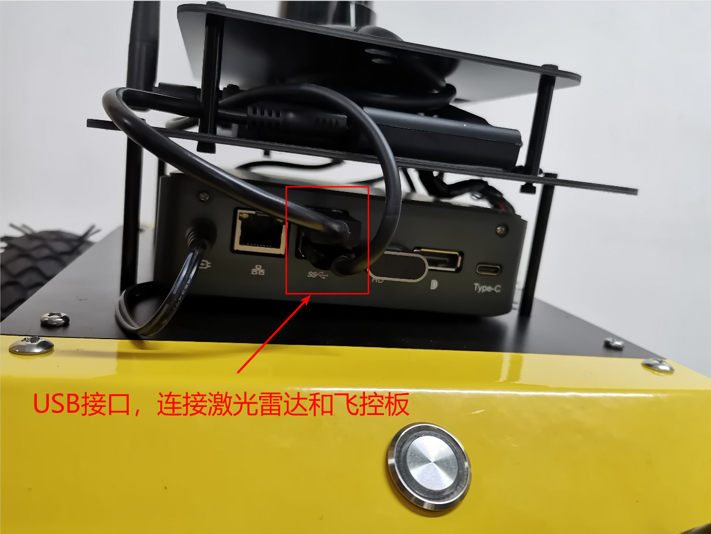 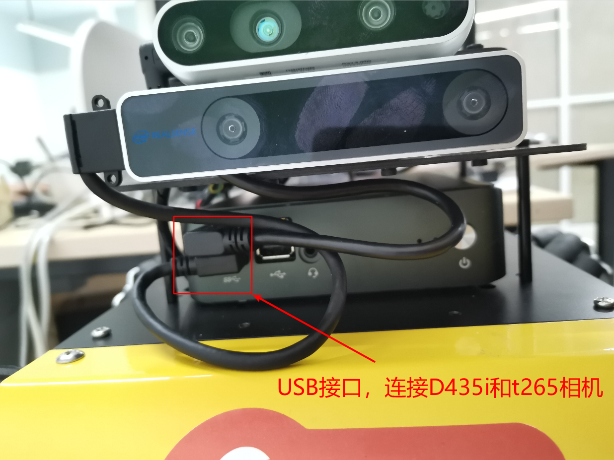接下来就可以启动ArduCar检查软件部分，但需要注意电量，电量过低将导致一些设备无法正常使用，例如wifi无法正常连接；相机，雷达等传感器无法启动。 确保电量充足的情况下，按下ArduCar电源开关以及板载计算机开机键。
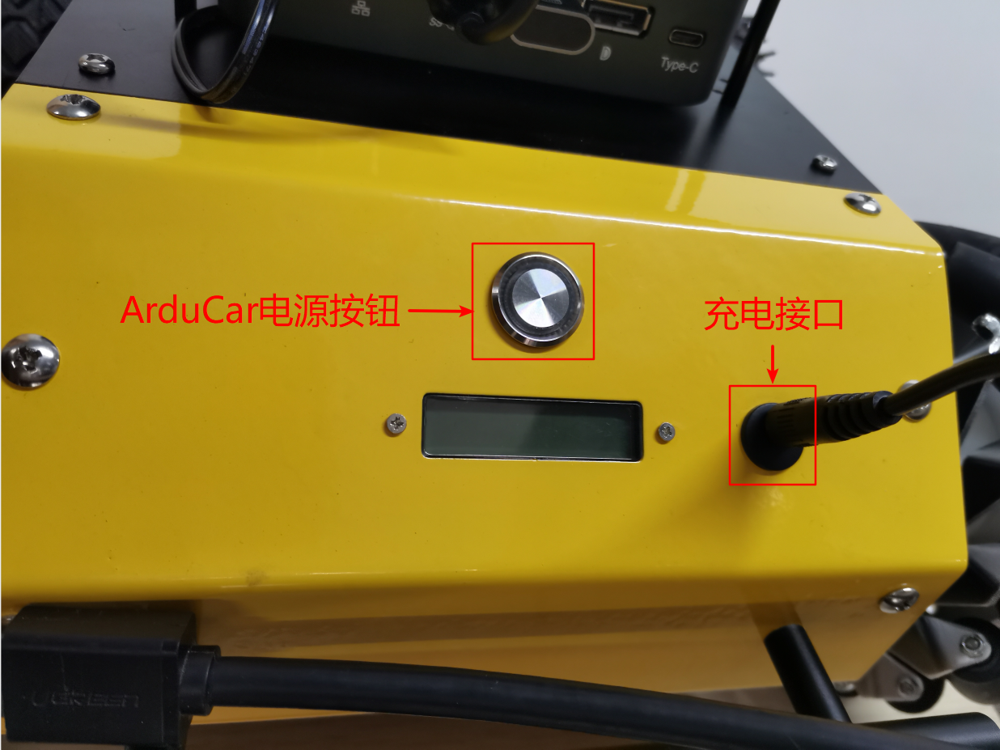
启动之后，可以通过远程连接板载计算机，或者直接将显示器和键盘鼠标接入板载计算机检查软件部分是否正常，首次使用建议接入显示屏鼠标键盘查看ip以及检查软件是否正常。 板载计算机的用户名和密码默认都是amov，用户可根据自身情况自行修改。进入Ubuntu系统后，首先查看wifi连接是否正常，通常情况下会连入与ArduCar编号所对应的wifi。在ArduCar侧面会有标签，上面有对应的编号。
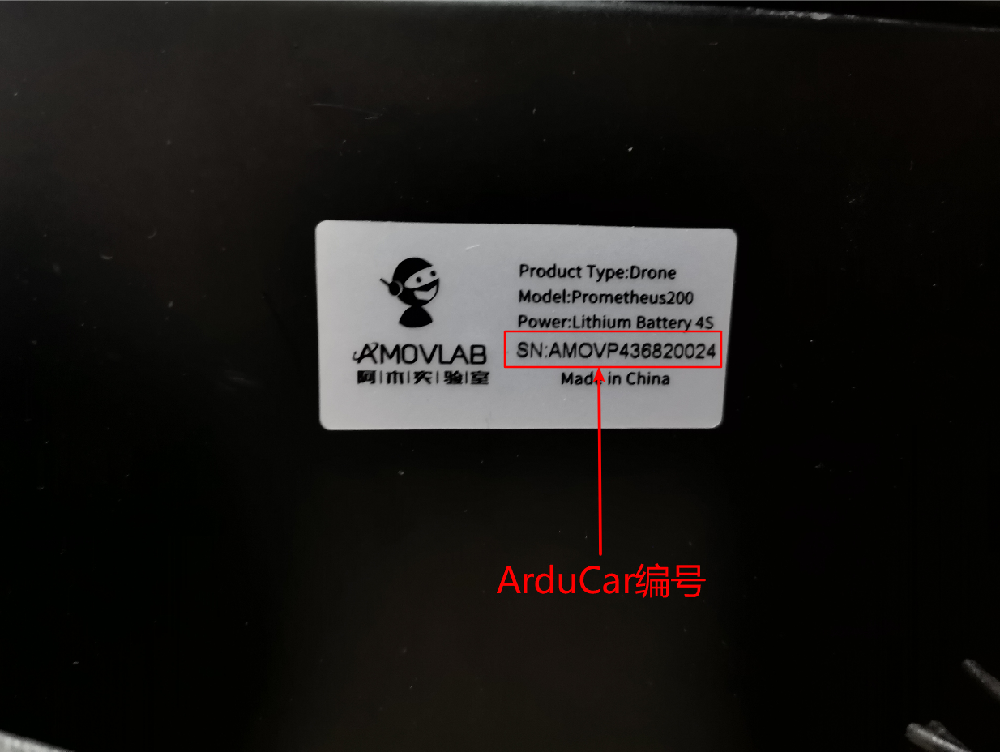图片中的SN:AMOVP436820024为该ArduCar的编号，对应的wifi名为amov-uav20024,wifi密码为amov20024,根据编号后两位数字的不同，wifi名和密码都会相匹配的变化。 连接上wifi之后，打开终端，输入ifconfig命令查看ip

ArduCar是会开机自动启动关于t265定位的launch文件，所以一开机就应该会有相应的话题，使用rostopic list命令查看是否有相关话题。

再使用rostopic echo /mavros/vision_pose/pose命令查看t265定位数据是否正常刷新
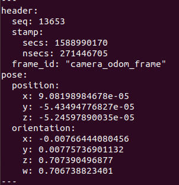当飞控板与板载计算机没有正常连接时，t265定位的launch文件会启动失败，从而影响板载计算机的启动，板载计算机启动时间会明显增加，并且开机后使用rostopic list会没有话题出现，可以通过使用以下命令检查问题:
$ cd ArduCar
$ ./t265_autoload.sh
通过终端打印的相关错误信息解决该问题。
1.5 小车校准¶
收到小车后，首先检查设备时候齐全完好无损，然后开启遥控器，拿出小车，打开小车电源，等待小车飞控成功启动后。左手拨杆向前，查看小车是否能够正常行驶。若不能前进，则可能是运输过程中传感器受到干扰，需要进行校准。 进行校准，我们需要使用软件工具MissionPlanner，如果暂时还没有安装的，请自行下载安装。
校准方法¶
1.直接拿着车校准，不对小车进行任何拆卸。(小车虽然有点小重，根据亲生经历，这边还是建议抱着车进行校准。)
2.单独拆下飞控和GPS，拿着飞控和GPS单独进行校准。，拆除步骤如下（拆下前可以先拍照记下接口接的位置）
1）先拆掉上层螺丝
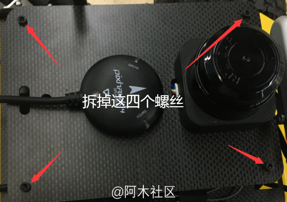2）拍照记录记下线的位置（小车配置不同，线可能会增加或减少

3）需要拔下的线（我以上面照片为例，拔掉线是为了不妨碍，接下来下面拆下安装飞控的碳板。配置不同需要拔掉的线可能会增加或者减少）
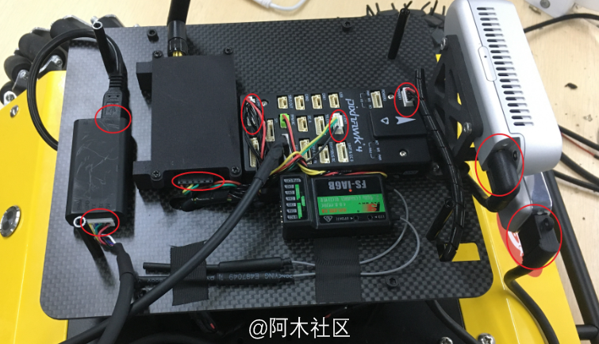4）取下飞控进行校准（取下如图飞控和GPS）

5）将飞控与电脑用USB线连接，打开MissionPlanner，选择端口连上飞控（电脑正常连接飞控后会出现comcom口，选中并点击右边连接即可）
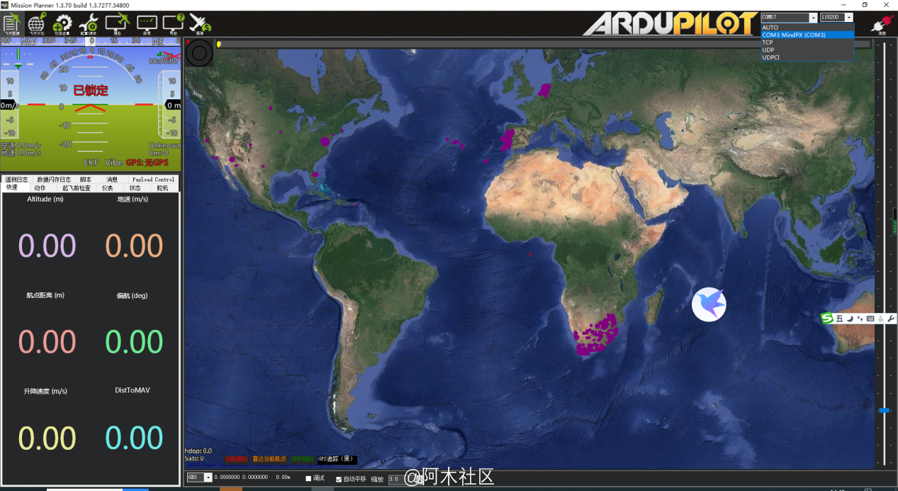根据提示校准加速度计¶
飞控箭头为正向，即箭头左为左，箭头右为右。在机体上校准比较好（装在机架上时候的水平状态才是真正的水平，这时候校正的水平才是最准确)。
建议：在机架上校正，一定要把飞行器放在很平的地面上进行，保证校正时候的水平状态的精确度。
1.连接地面站（飞控自检完成后）
2.点初始设置-可选硬件-校准加速度计
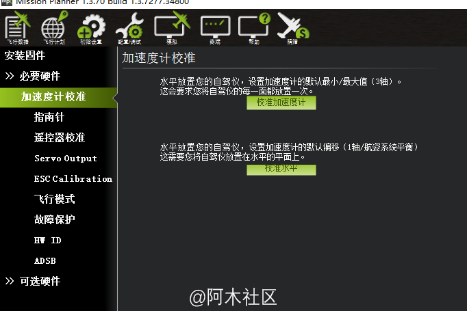3.开始校准加速度计，按照MP上的提示，飞控的每个面都会校准，位置放好后千万不要动，以免校准失败，点击完成时点击选型，进行下一个面的校准，最后校准成功会提示加速度计校准成功，否则提示失败（中间过程中若提示加速度没有计算，最后应该都会失败，放好后不要动）
4.校正完后下面有一个水平校正，点击进行，校准过程中不要移动飞控一般不会有问题
罗盘（指南针）校准¶
（全方位旋转小车或飞控。只选择使用第一个指南针，这样校准方便一些。也可以选择前两个，则转动的时间次数可能会多一些。
校准步骤如下：
1.连接飞控。
2.初始设置-必要硬件-罗盘
3.只勾选第一个，（如需提高精度也可添加外置罗盘）准备好后点击开始现场校准
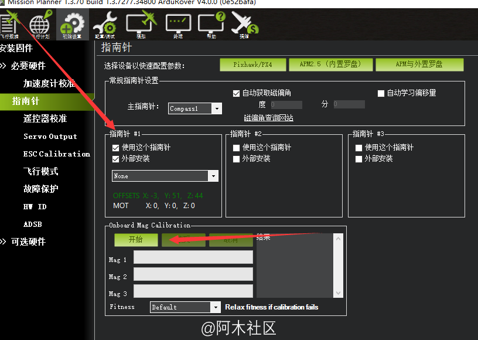4.进行校准
方法：每个面绕其中心轴旋转360度，校准过程中注意千万不要碰到USB线，以免断开飞控。
5.校准完后，界面会有新的三轴的值，绿色值表示正常。

6.注意事项
（1）在室内会做校正罗盘时候，室内设备会对地磁产生干扰影响罗盘精度，如需提高精度建议在室外做一次。
（2）APM内置的罗盘很容易受到飞控内电子元件干扰，还有电池、接收机等其它的干扰，如果用外置的罗盘的话精度会增加不少。
（3）在飞行器重新布线、升级固件、添加或者换设备时候，建议重新做一次校正罗盘。
遥控器校准¶
1.遥控器通道配置
通道1：roll(横滚)
通道2：pitch(俯仰)
通道3：throttle（油门）
通道4：yaw（偏航）
通道5：飞行模式（辅助通道，具体可见遥控器辅助通道及失控保护）
美国手：左手油门（遥控器系统设置中的摇杆模式为2）
日本手：右手油门
2.开始遥控器校准（以美国手为例）
（1）连接地面站（飞控自检完成后）
（2）卸载螺旋桨，初始设置-可选硬件-遥控器校准
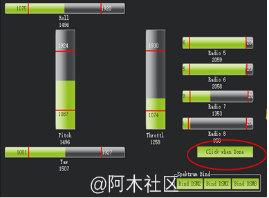（3）打开遥控器，确认已接上接收机。
（4）来回拨动遥控器的开关，使每个档位分别到达其最大和最小，MP遥控通道上红色线条的显示，让地面站记录其最大行程和最小行程。
（这里要保证油门上推，代表油门的绿色条也向上，roll和Yaw也是，pitch相反，如果不是，可在遥控器的舵机相位中修改正反相）
（5）点击完成，会出现各通道值。
（6）观测遥控器行程，最小值小于1100，最大值大于1900，则遥控器正常。

3.注意事项
1）如果摇动遥控器控制杆时候校正条没反应，需要重新检查：（1）接收机是否已经连接到飞控，接线是否有错。（2）遥控器与接收机是否对好码。
2）如果控制杆的通道与校正条不一致的时候（如摇动油门杆时候Pitch的校正条变化），请设置遥控器的左右手模式。
3）第五通道（辅助通道）用于切换飞行模式，也需要校正第五通道，但每个遥控器设置第五通道用于飞行模式都有差别
1.6ArduCar测试¶
1.6.2 基础版室内测试¶
室外基础版硬件在室内的基础上增加了板载计算机，主要测试内容为
航点规划。
在进行室内版测试时，需要连接到远程工具nomachine以后才可以进行。
- 启动NoMachine等远程连接工具
板载计算机的ip一般情况为192.168.10.100，以之前查看的ip为准，用户名和密码均为amov
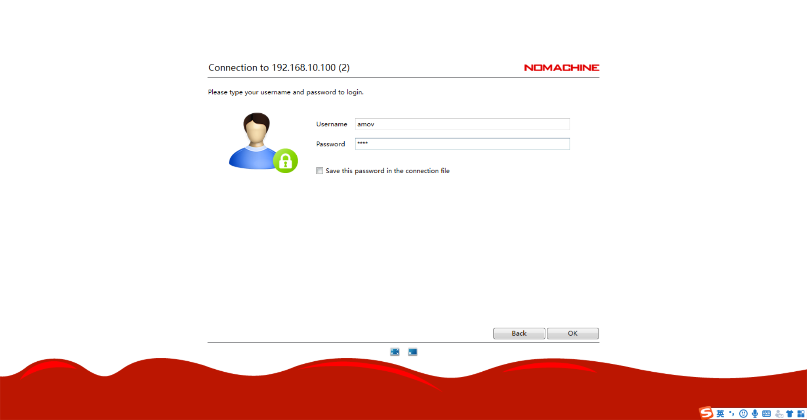 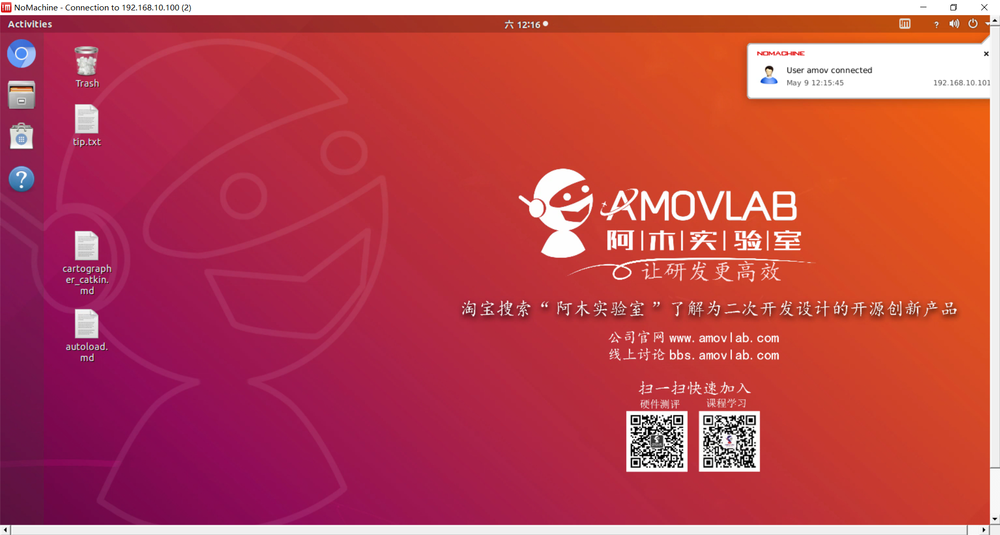- 启动相关脚本测试相关功能
1.6.6 导航¶
使用navigation需要先建立一张地图，先使用前面的建图脚本cartographer_slam.sh在小车运行的环境中建出一张较好的地图，然后打开终端 输入以下命令将地图保存在maps文件中。
$ cd /Arducar/src/sup/path_planning/ros_navigation/maps
$ rosrun map_server map_saver -f map
接下来就可以运行导航的脚本
$ ./apm_navigation.sh
输入该命令即可启动导航功能会弹出终端以及rviz界面，该功能需要激光雷达以及t265传感器,需要在rviz中设置小车起始点以及导航目标点，所以必须要有NoMachine 远程连接到小车的板载计算机。


在rviz中，根据小车的在实际环境中的位姿，使用2D_pose插件在地图上设置小车初始点，鼠标左键点击小车初始位置并长按，移动鼠标将箭头方向指向小车的 正前方，设置不准确可多次调整，直至激光数据与地图数据较为匹配，如图所示
- 2D pose 插件
使激光数据匹配地图，达到如图所示的效果
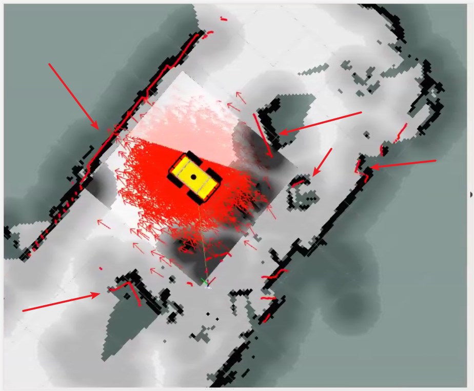当初始位姿调整好之后，就可以使用遥控器控制小车以较慢的角速度旋转直至定位粒子收缩得较为密集，如图所示
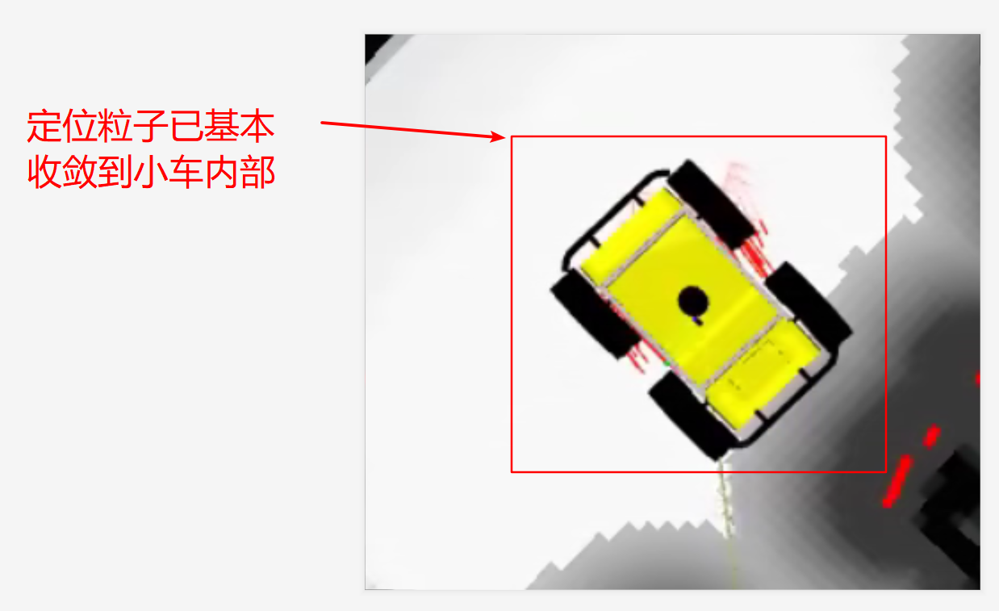当机器人定位粒子收敛较好时，便可以通过2D Nav Goal插件给小车发布导航目标点，设置方式与前面的设置小车初始点一致

Note
只有在Mission Planner设置了起始点才能够切换到guide模式,切换为guide模式才可以使ROS的控制命令传递到飞控板
接下来小车便会自动前往目标点，并能够自主避障
- 全局路径

- 本地路径
1.6.7 详细操作指南¶
 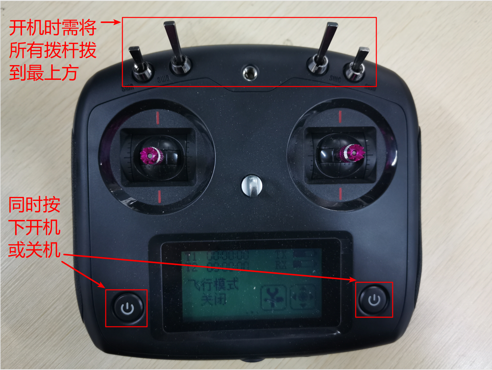
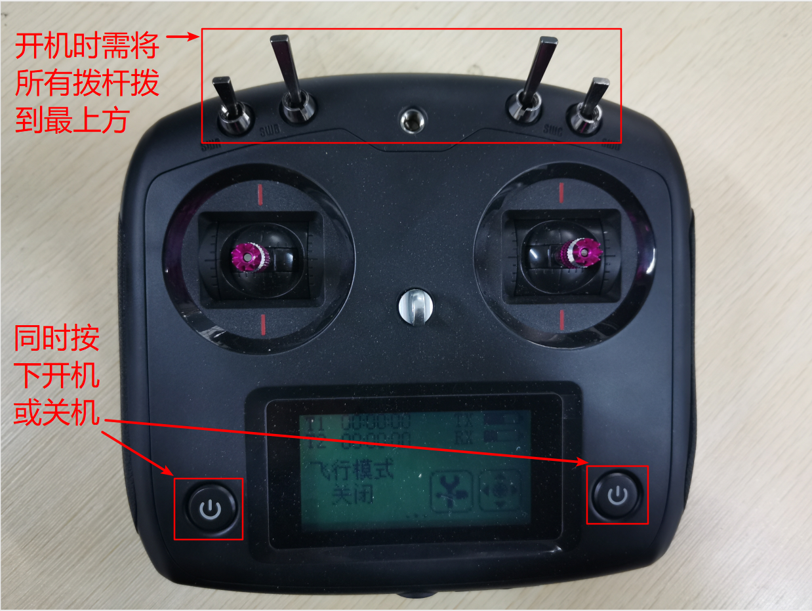
地面站控制¶
- 远程计算机连接到ArduCar的wifi
- 启动Mission Planner连接到飞控端
端口号为6000
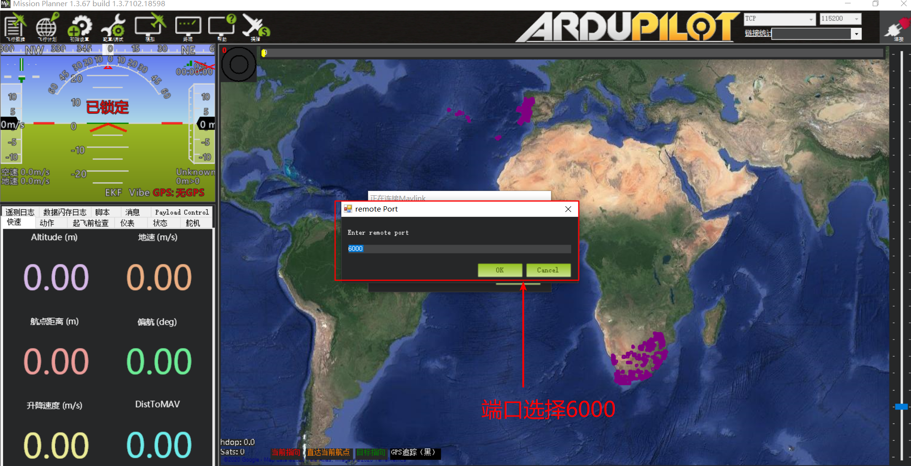这个时候就可以通过地面站Mission Planner控制小车按照航点运动。
航点规划¶
首先在Mission Planner中设置小车起始点，在任意一个位置点击鼠标右键，根据如图所示点击Set Ekf Origin Here,出现紫色小车说明位姿设置成功

设置好小车初始点后，点击左上方的飞行计划，进入航点设置界面，将鼠标移动到你想要小车前往的位置，点击鼠标左键即可设置航点。
Note
因在室内进行小车测试，请用鼠标滚轮将界面放到最大，否则航点距离非常远，可在左上角查看航点距离数据。
设置好航点之后点击界面右边的写入航点，再用遥控器将小车切换为Auto模式，小车即可自动前往航点。
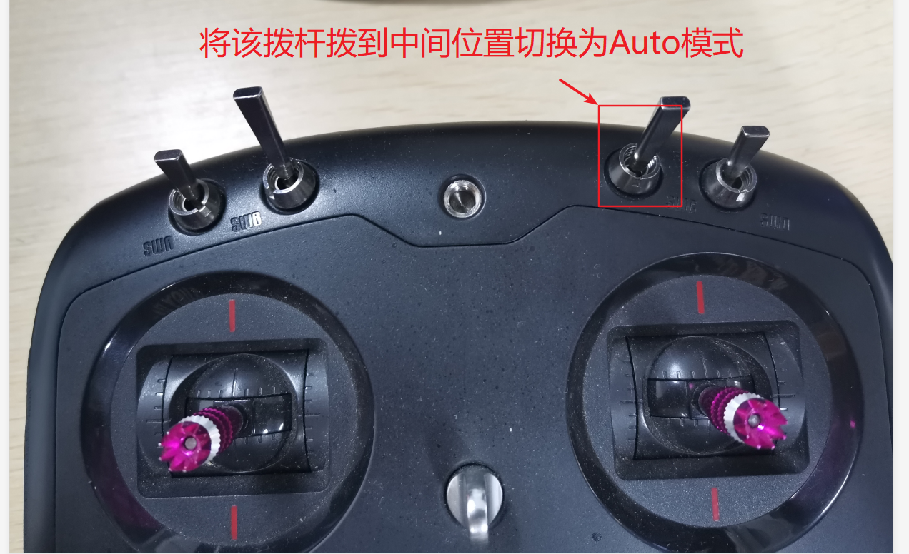视觉定位¶
首先进入sh脚本文件夹下
$ cd /ArduCar/src/amovcar/sh
查看一下可运行的脚本
$ ls

$ ./rtabmap.sh
输入该命令即可启动三维建图功能，该功能需要t265传感器和D435i传感器。
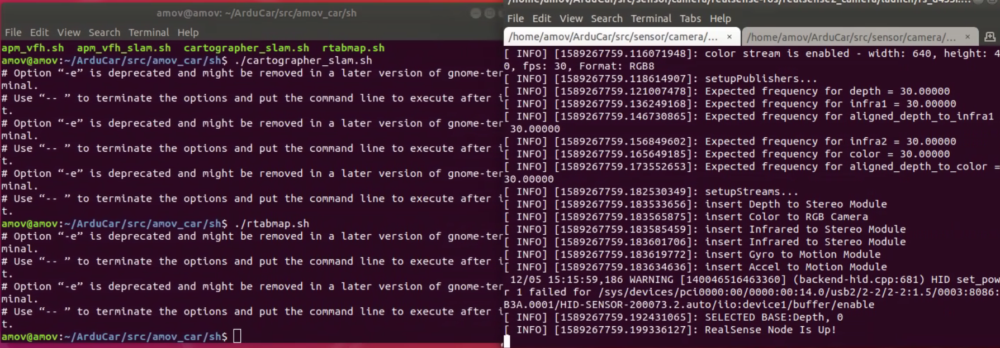建图效果：
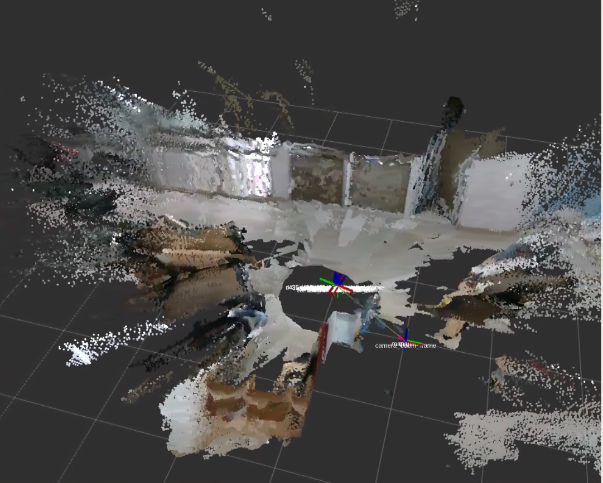VFH避障¶
首先进入sh脚本文件夹下
$ cd /ArduCar/src/amovcar/sh
查看一下可运行的脚本
$ ls
$ ./apm_vfh.sh
输入该命令即可启动vfh避障功能，该功能需要激光雷达传感器。在Mission Planner中规划相应的航点，将遥控器切为guide模式，ArduCar便可自动移动到航点位置并避障，但尽量在较为简单的环境测试该功能，复杂环境中，计算机无法快速处理障碍物信息从而影响避障效果。
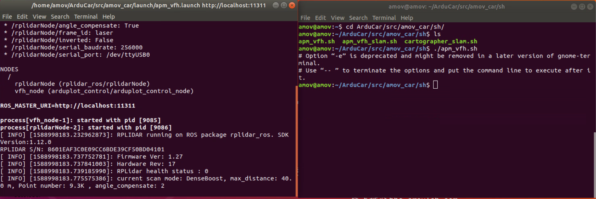 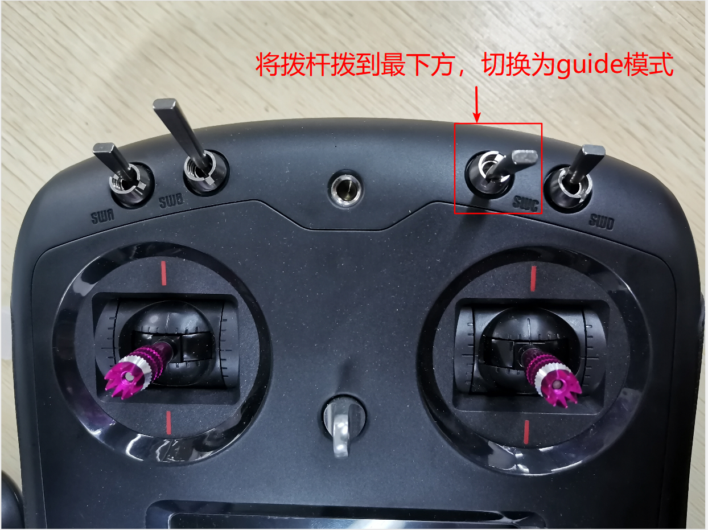二维激光雷达建图¶
首先进入sh脚本文件夹下
$ cd /ArduCar/src/amovcar/sh
查看一下可运行的脚本
$ ls
$ ./cartographer_slam.sh
输入该命令即可启动cartographer建图功能，该功能需要激光雷达传感器。使用rviz可查看地图，使用遥控器控制ArduCar移动，可建立完整的地图。 地图效果根据环境，cartographer算法的参数和激光雷达的不同，效果也是不一样的，建图时尽量使ArduCar以较慢的速度移动，从而保证地图的准确性。
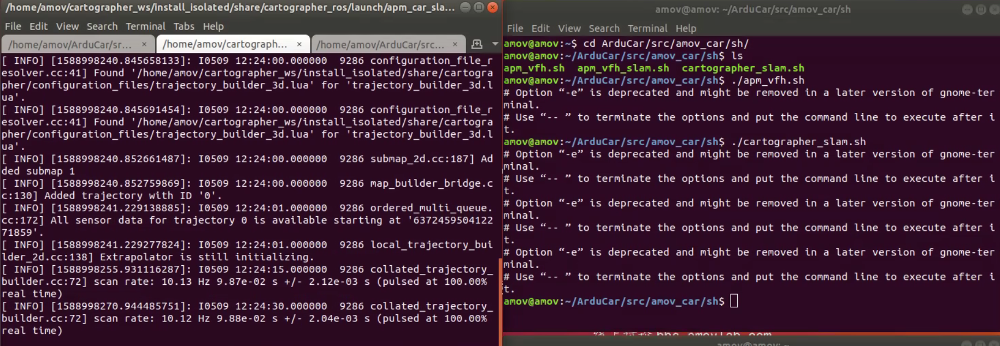 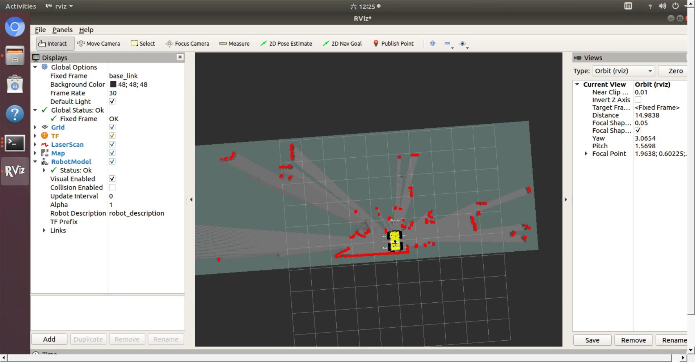1.7 简单应用例程¶
cartographer融合t265imu数据进行建图¶
首先要对cartographer以及t265做一个简单的了解
在我们小车上已经有了cartographer建图功能，但没有融合imu数据，查阅cartographer官方文档后，获取了融合imu的具体方法。
cartographer会接收名为imu话题中的数据，数据类型为sensor_msgs/Imu
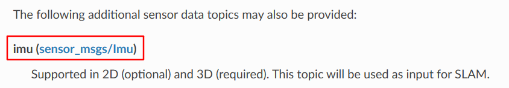 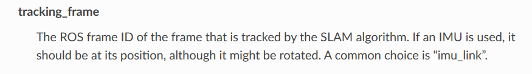 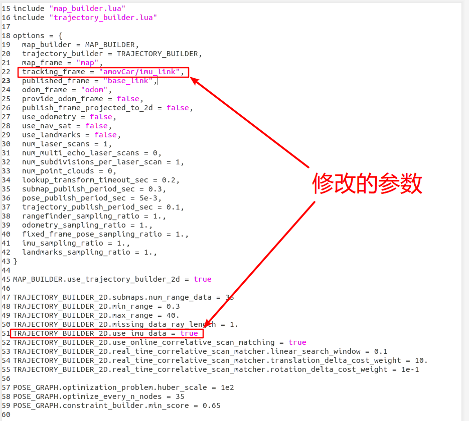如图所示，在我们的模型当中已经预留了imu_link，名为amovCar/imu_link,所以修改方法为将tracking_frame改为 amovCar/imu_link，将TRAJECTORY_BUILDER_2D.use_imu_data参数设为true，
现在cartographer部分的修改已经结束，回到cartographer_ws工作空间下，编译一下，注意，这里的编译只能用cartographer提供的编译命令进行编译
Note
$ catkin_make_isolated –install –use-ninja
接下来需要查看t265的imu数据，通过查阅t265相关的资料发现，t265发布imu数据格式需要修改一个参数，这个参数的修改位置位于ArduCar/src/amov_car/launch文件夹下的apm_t265_position_to_mavros.launch文件中， 找到uniti_imu_method参数，将参数值改为linear_interpolation或copy，t265的驱动便会向/camera/imu发布消息类型为sensor_msgs/Imu的数据。

但它的frame_id为t265相机的frame_id，因此我们需要将这个数据做一个转换。 我们需要写一个节点，接收/camera/imu话题中的数据，将数据的frame_id改为amovCar/imu_link之后再发布到imu话题中。这里我们采用c++写了一个ros节点，程序内容如下：
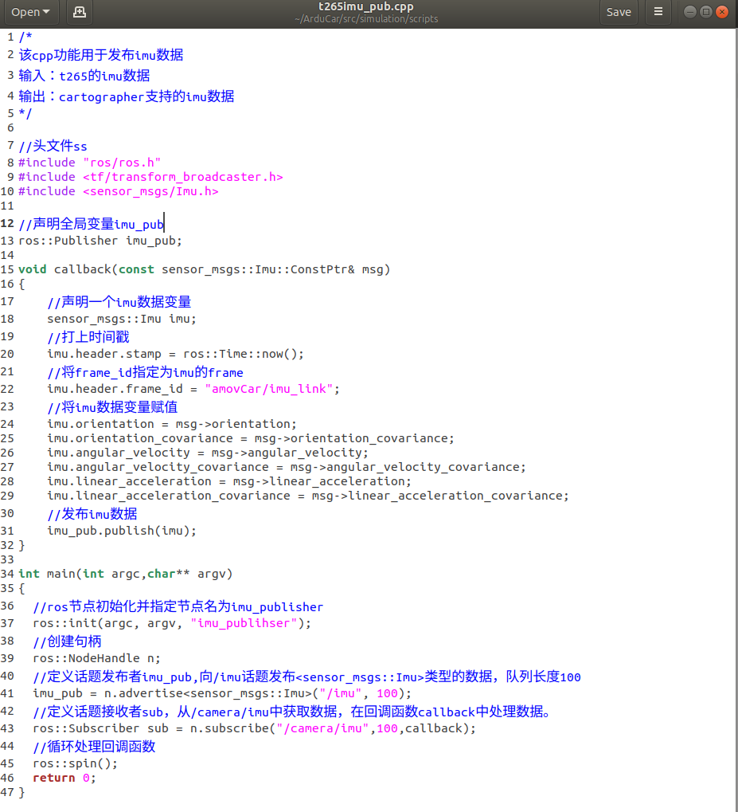现在t265和cartographer都已经配置完毕，还需要配置amovCar/imu_link的物理位置，先说明一下小车的坐标系，小车的空间直角坐标系为右手坐标系，小车前进的方向为X轴，也就是食指指向的方向， 中指指向Y轴方向，也就是小车的左方，大拇指的方向指向Z轴，也就是小车的上方。因为t265的imu数据位置来源于t265相机摆放的位置，根据t265的实际摆放位置就可以确定 imu_link的位置，小车高度为0.2675米，小车中心的高度为0.13375米，搭载t265相机的平板对角线交点就是小车的平面中心，根据这些数据就可以算出imu_link与base_link之间的tf关系， 经过测试，imu的方位角在X轴上旋转了90度，因此还要需要将imu_link旋转90度，在这里是以弧度为单位，所以90度大约为1.57。
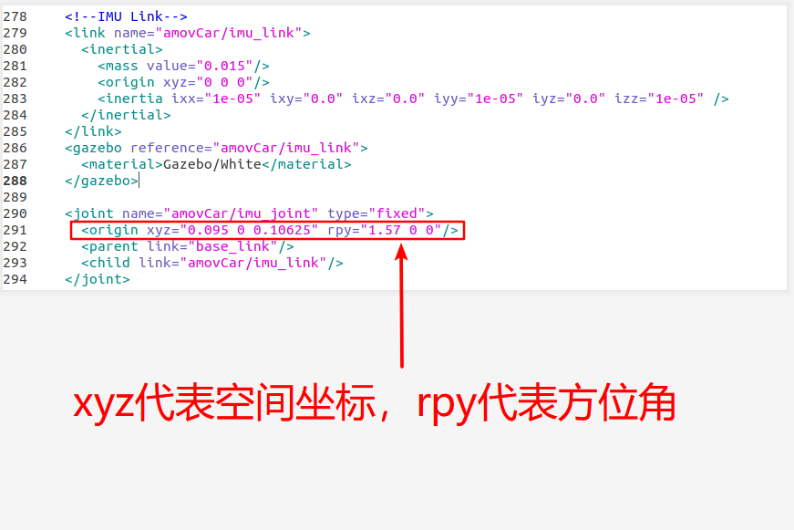配置完毕后，功能就配置好了，接下来就可以尝试启动该功能了。因为t265相机是自启动，所以我们只需要启动imu tf转换的节点和cartographer_slam.sh脚本即可
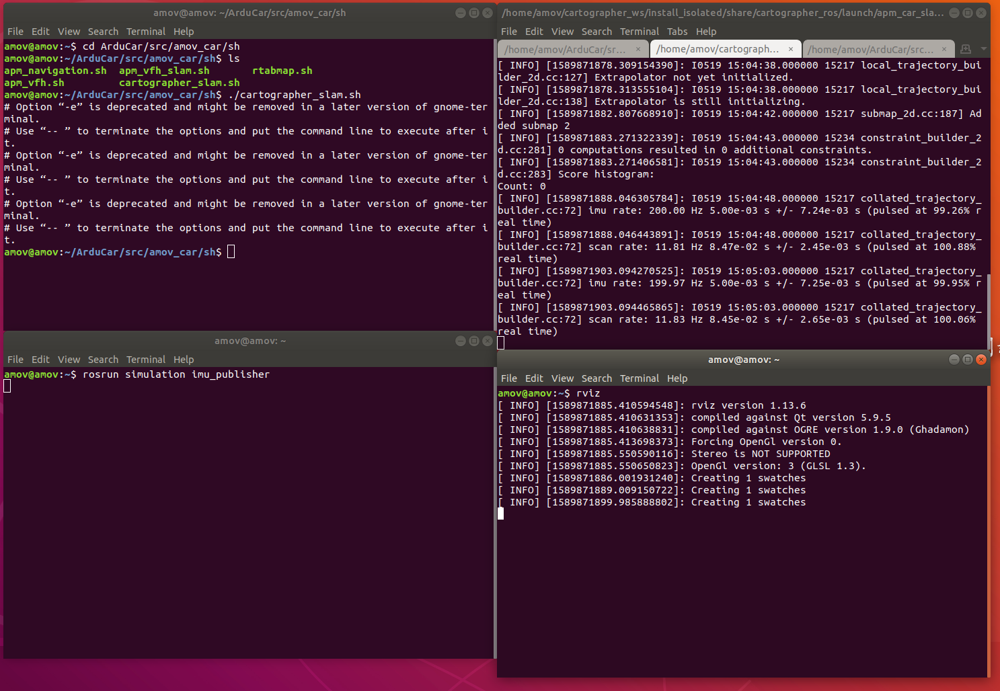
可以看到/camera/imu话题中的数据传递到/imu_publisher节点中，再发布到/imu话题中，cartographer_node再接收/imu话题中的数据就实现融合imu数据进行建图了。